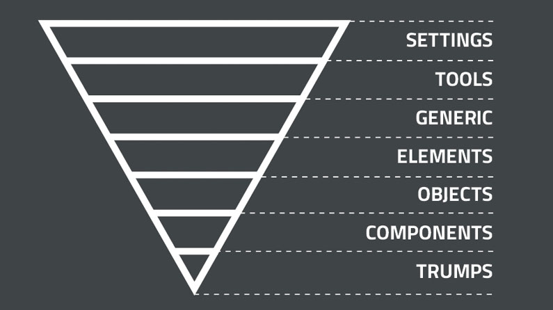

Significado
ITCSS (Inverted Triangle CSS) es una metodología para organizar y estructurar hojas de estilo en proyectos web grandes y complejos. Organiza las reglas CSS desde lo más genérico a lo más específico, ayudando a mejorar la mantenibilidad y escalabilidad.
Características
- Jerarquía clara desde lo genérico hasta lo específico.
- Modularidad en capas con responsabilidades definidas.
- Estructura escalable que permite añadir nuevos estilos fácilmente.
- Evita la sobrescritura innecesaria.
Usos
ITCSS se utiliza en proyectos grandes y complejos para evitar conflictos entre estilos, mejorar la escalabilidad y garantizar que los estilos sean fácilmente mantenibles. También es útil cuando hay varios desarrolladores trabajando en el mismo proyecto.
Ejemplo de Uso
<div class="container">
<h1 class="header__title">Ejemplo de Título</h1>
<p class="text--center">Este es un párrafo centrado.</p>
</div>
Apliacion
El código definido en las capas superiores tiene un impacto mayor que el definido en las capas inferiores. Así, las capas superiores afectan a las inferiores, pero nunca al revés. Las capas inferiores heredarán los estilos de sus superiores.
 Una carpeta con las importaciones. Esto es algo que se utiliza para tener mejor organizados los archivos de cada capa ITCSS, sobre todo cuando trabajamos varias personas, así podemos localizar mejor nuestro código y donde añadir los nuevos archivos a importar.
No obstante, si lo prefieres, puedes omitir esta carpeta y añadir las importaciones directamente en el archivo principal.
Una carpeta con las importaciones. Esto es algo que se utiliza para tener mejor organizados los archivos de cada capa ITCSS, sobre todo cuando trabajamos varias personas, así podemos localizar mejor nuestro código y donde añadir los nuevos archivos a importar.
No obstante, si lo prefieres, puedes omitir esta carpeta y añadir las importaciones directamente en el archivo principal.
.png)
.png)